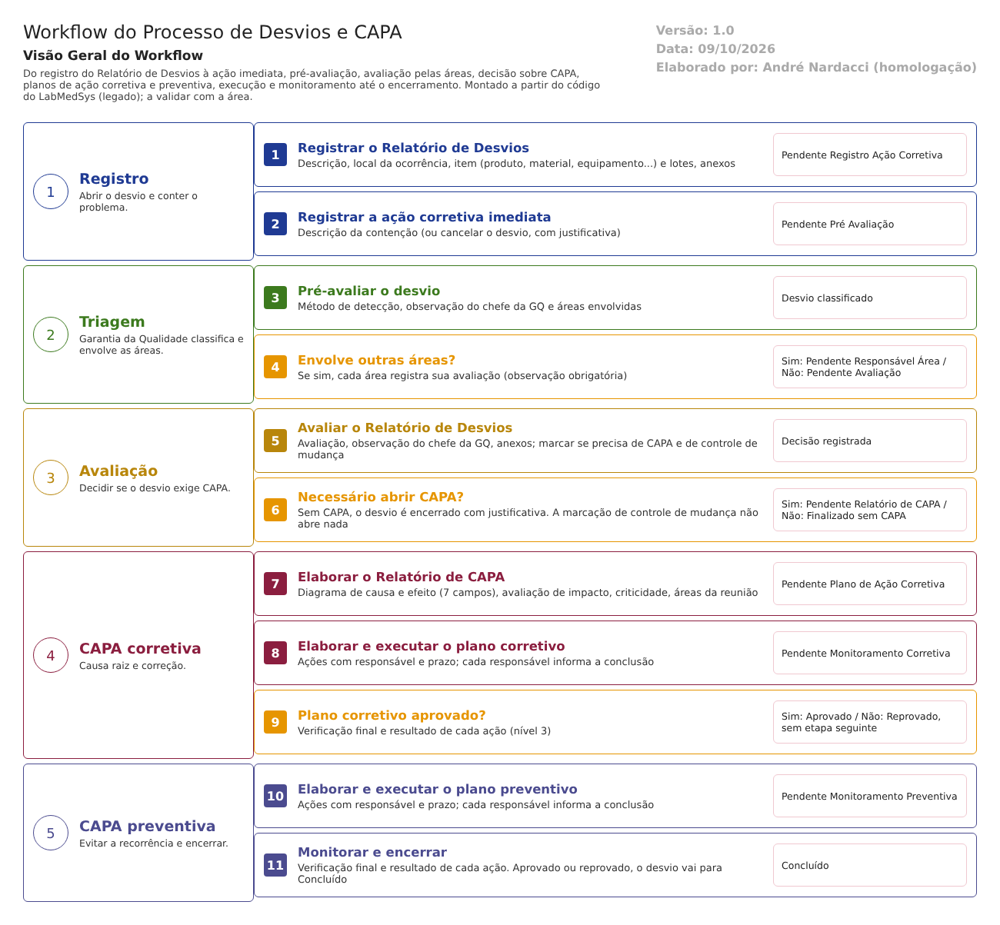

O menu Controle de Desvios do módulo Garantia da Qualidade registra, investiga e encerra os desvios (relatórios de não conformidade, os RD) e as ações corretivas e preventivas (CAPA). Esta seção descreve cada uma das 14 telas do menu como o sistema entregue pelo fornecedor (legado) funciona hoje, lido do código e confirmado nos testes de tela feitos até 16/10/2026.
Cada tela tem a sua própria página, com o manual do usuário, os campos, os botões, as mensagens, as regras de negócio, o fluxo, as falhas e os casos de teste. Rascunho para revisão: toda afirmação traz a fonte no código ou no teste, e o que ainda não foi visto numa tela real está marcado "A confirmar no teste".
Como ler
Situação de uma regra: Extraída (vem do código), Validada no teste (confirmada numa tela) ou A confirmar no teste. A situação do desvio aparece na tela com os nomes entre aspas, como "Pendente Pré Avaliação" e "Finalizado".
As 14 telas, em ordem
| # | Tela no menu | Para que serve | O desvio chega em | Ao salvar, vai para |
|---|---|---|---|---|
| 1 | Relatório de Desvios | Registrar o desvio, o item afetado (produto, equipamento ou material) e o anexo | Nova ocorrência | Pendente Registro Ação Corretiva |
| 2 | Registro Ação Corretiva Imediata | Registrar a contenção feita na hora | Pendente Registro Ação Corretiva | Pendente Pré Avaliação |
| 3 | Pré Avaliação Relatório Desvios | Primeira leitura da GQ: método de detecção e áreas envolvidas | Pendente Pré Avaliação | Pendente Responsável Área, ou Pendente Avaliação Relatório de Desvios (sem áreas) |
| 4 | Avaliação Área | Cada área envolvida registra o seu parecer | Pendente Responsável Área | Pendente Avaliação Relatório de Desvios (quando todas avaliaram) |
| 5 | Avaliação Relatório Desvios | A GQ conclui a avaliação e decide se abre CAPA | Pendente Avaliação Relatório de Desvios | Pendente Relatório de CAPA, ou Finalizado sem Relatório CAPA |
| 6 | Relatório de CAPA | Investigação da causa (diagrama de causa e efeito), impacto e criticidade | Pendente Relatório de CAPA | Pendente Plano Ação Corretiva |
| 7 | Plano de Ação Corretiva | Definir as ações corretivas, responsáveis e prazos | Pendente Plano Ação Corretiva | Pendente Monitoramento do Plano Ação Corretiva |
| 8 | Execução do Plano de Ação Corretiva | Cada responsável informa a conclusão da sua ação | Plano corretivo definido | A situação do desvio não muda |
| 9 | Monitoramento do Plano de Ação Corretiva | Verificação final e aprovação do plano corretivo | Pendente Monitoramento do Plano Ação Corretiva | Aprovado Plano Ação Corretiva |
| 10 | Plano de Ação Preventiva | Definir as ações para o desvio não se repetir | Aprovado Plano Ação Corretiva | Pendente Monitoramento do Plano Ação Preventiva |
| 11 | Execução Plano de Ação Preventiva | Cada responsável informa a conclusão da sua ação preventiva | Plano preventivo definido | A situação do desvio não muda |
| 12 | Monitoramento do Plano de Ação Preventiva | Verificação final e encerramento do desvio | Pendente Monitoramento do Plano Ação Preventiva | Finalizado |
| 13 | Acompanhamento RD | Imprimir os desvios por situação, em um período | Consulta, a qualquer momento | Nenhuma (só impressão) |
| 14 | Controle de Emissão de RNC | Imprimir os relatórios de não conformidade emitidos, por ano | Consulta, a qualquer momento | Nenhuma (só impressão) |
O caminho do desvio

Do registro ao encerramento, o desvio passa por estas situações. As telas 8 e 11 (execução das ações) não mudam a situação do desvio.
| Situação | Tela que a muda |
|---|---|
| Pendente Registro Ação Corretiva | 1 |
| Pendente Pré Avaliação | 2 |
| Pendente Responsável Área (só se a pré-avaliação indicar áreas) | 3 |
| Pendente Avaliação Relatório de Desvios | 3 ou 4 |
| Pendente Relatório de CAPA, ou Finalizado sem Relatório CAPA | 5 |
| Pendente Plano Ação Corretiva | 6 |
| Pendente Monitoramento do Plano Ação Corretiva | 7 |
| Aprovado Plano Ação Corretiva (o estado Reprovado existe no código, mas a tela não tem como chegar nele) | 9 |
| Pendente Monitoramento do Plano Ação Preventiva | 10 |
| Finalizado | 12 |
| Cancelada | 1 ou 2 |
O que já sabemos sobre este menu
- Quatro falhas confirmadas em teste de tela: o cancelamento pela tela Relatório de Desvios não grava histórico (DV-GQ-001); o plano corretivo é aprovado com ação pendente (DV-GQ-002); a busca de produto e de material não devolve nada (DV-GQ-010); o plano preventivo não tem o botão Reprovar (DV-GQ-012).
- Muitos pontos novos só pelo código, todos marcados "A confirmar no teste": por exemplo, a tela só oferece 3 dos 14 tipos de item que a regra previa; a caixa de controle de mudança na avaliação grava sempre "Não"; o Monitoramento aprova mesmo com "Ações implementadas = Não"; a Observação da Execução é gravada numa coluna e lida de outra.
- O que a tela não tem: aprovação do plano antes da execução, verificação de eficácia depois de um prazo, classificação de risco na pré-avaliação, campo para justificar erro humano, e agrupamento por causa, área ou produto nos relatórios de acompanhamento (necessário para a análise de tendência).
- Números desta análise (rascunho): 456 linhas de campos, 274 regras de negócio e 383 casos de teste distribuídos nas 14 telas. A maior parte dos casos ainda não foi executada.
Como usar esta seção
- Para operar o menu: abra a página da tela e leia o Manual do usuário.
- Para testar: o roteiro de execução das 14 telas e os casos de teste de cada página.
- Para homologar: as regras de negócio, as falhas e os pontos de atenção de cada tela.
- Cada página tem o botão para baixar o documento em Word.